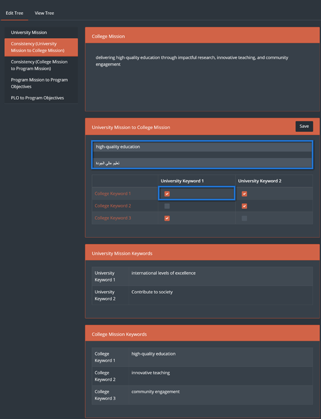
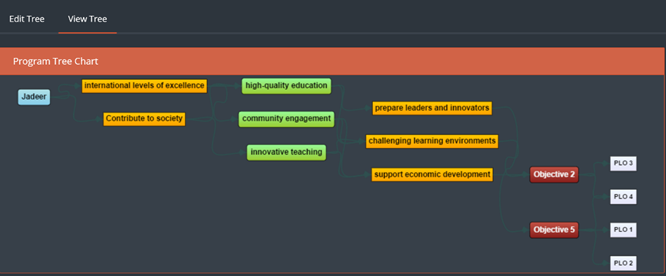
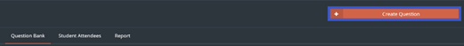
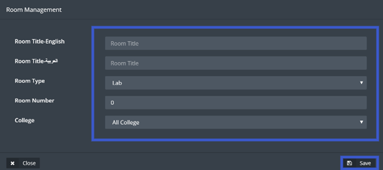
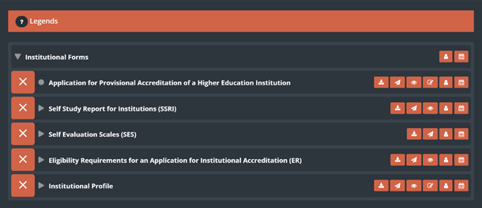
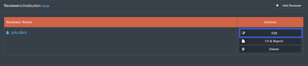
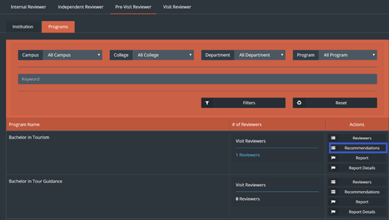
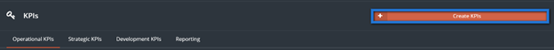
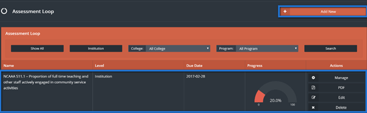

Adminstration
Table of Content ¶
1. Log-in and Header ¶
- To access Jadeer, first you will have to type URL provided by the institution.
- Enter the username and the password.
- Click on Sign in

1.1. Jadeer Page Header ¶
|
|
|||||
|
|
|
|
|
|
|
|
1
|
2
|
6
|
5
|
4
|
3
|
-
Institution name
-
Language: click on this button to navigate between Arabic and English.
-
Notification button: Show user directed activities and assignments.
-
Click on notification icon, then choose required notification by clicking on it.
-
-
Messages: full functioning e-mailing functionality.
-
Click on ”messages”
-
Click on ”Inbox” to check if there are any messages.
-
To send a message click on ”new email” button.
-
Enter needed message body, subject and the user then click on ”Send”.
-
-
Semester: Click on ”semester” to choose required semester to manage.

-
User name: contains two parts.
-
Profile: Click on ”profile” to access user personal page.

-
User basic information will appear to view and user will be able to edit his\her information.
-
Log out: to Log the user out of jadeer.
-
2. Dashboards ¶
This module will give the user a clear detailed information about accreditation, KPI`s and also on a personal level.
-
Access the dashboard by clicking on ”Dashboard” button from the main menu.
-
User should Choose the type of information he\she is looking for by clicking on the
required menu option.
-
If user click on KPI`s, system will show dashboards related to KPI`s.
-
Click on accreditation status to have access to related information about
accreditation, and its details.
3. Curriculum Mapping ¶
The goal of this module is to have a defined set of PLOs and CLOs (Course Learning Outcomes) mapped together. This is a defined set of requirements for all courses in the university.
Benefits: This module target is to improving the courses quality for the university.
-
Access this module by choosing Curriculum mapping from the Curriculum drop-down menu
in the main menu.
The upper menu contains four main buttons:- Program management: to manage the PLO`s within a program.
- Course management: to manage the CLO`s within a course.
- Reporting: Shows the Competencies Dimension.
- Settings: Allows the user to manage Learning domains and assessment methods.
-
First to start with program management click on ”management” button.
-
Choose the required learning domain then click on ”manage”.
- Fill the required fields and click on the white box to choose the outcome needed.
- The user can add a new learning outcome by clicking on ”Add learning outcome” button.
- Click on ”save”
- Click on assessment methods.
-
First we need to add the required assessment methods by clicking on Manage
assessment methods.
-
Choose required assessment methods by checking the white boxes, then click on
”Save”.
-
Click on ”Manage” to add Assessment component to the Assessment method.
-
Type the Assessment component needed into the boxes and check on the required box to
be activated, then click on ”Save”.
-
Click on ”Mapping matrix” to link between learning domains and the courses, then to
choose the level.
-
Click on edit to Choose the Program level and the IPA level, then click on ”Save”.
-
To manage the CLO`s click on ”Course management”.
-
Click on ”learning outcomes”.
-
Click on ”manage” learning outcomes”, fill the required fields then click on ”Save”.
-
From the learning outcomes page click on ”Mapping” button.
-
Choose the assessment method and map it by clicking on the white boxes next to them.
-
Click on ”Assessment methods” then on manage assessment methods.
-
Fill the required assessment method then click on”Save”.

-
Click on ”Course sections”, then on learning outcome mapping and select the required
assessment method in order
to add questions to be linked with the CLO`s and then to set the scale score for
that question.
-
Back to Course sections page, click on ”Student assessment” then choose the student
and the required assessment method,
to be able to set the set the student score for each question, when done click on
”Save”.
-
To have a full report from the steps above click on ”reports” from Curriculum
mapping page, and choose the required part to have a detailed view about it.
-
By clicking on the Settings from Curriculum mapping page the user will be able to
modify
the assessment methods along with the learning domains, by using edit and delete
buttons.
Grade Book ¶
This part of the module will help the user to access all the students grades
-
To Access the this part of the module click on “GradeBook“
-
Click on “View Sections” next to the required course
- Click on “View Students” to access list of students next to the required course
-
Click on Curriculum to evaluate students as shown below
-
Click on “Examination” then choose which exam assignment or quiz to access then
click on “Save” button
-
List of students and their grades will appear for the user
-
Click on “Report” to generate report of the chosen “Exam”
4. Program Tree ¶
This module allows the user to link between the university mission all the way down to the program objectives in an organized way, to be shown in a tree like chart showing the whole linking process.
-
Access this module by choosing Program Tree from Curriculum drop-down menu in the
main menu.
-
Choose a program from the list or use the search
filters to find the required program, then click on ”Edit Tree”.
-
In the university mission page type in the needed keywords into the box, then click
on ”save”.
- The university keywords will be linked with keywords from the college mission.
-
Click on ”Consistency between university mission to college mission” button.
-
Choose college mission keywords from the college mission, then link between the
university mission keywords and the college
mission keywords by clicking on the mapping boxes.

-
Click on ”Consistency between college mission to program mission” button.
-
Choose college mission keywords from the college mission, then link between the
university mission keywords and the program
mission keywords by clicking on the mapping boxes, then click on “Save”.
-
Click on ”program mission to program objectives” button.
-
Link between program mission and program objectives by clicking on the mapping
boxes.
-
Click on ”PLO to program objectives” button.
-
Link between PLO`s and program objectives by clicking on the mapping boxes, then
click on save
-
Now to view the program tree that has been created click on ”View tree”.

5. Examination ¶
Examination module is a module that is responsible of all student testing related activities including exams, Quizzes, and assignments with the ability to store and retrieve any questions needed at any time.
-
Click on Examination located in main menu
-
User can manage different type of examination by navigating top bar menu
- To start with the Exam, click on “Exam” button
-
To create a new exam, click on “Create Exam”
-
Fill related information to the exam, then click on “Save”

-
Exam will appear along with its options across as shown below
- View button is used to see all questions in the chosen exam
- Manage button allows the user to edit exam information, same as shown in point number 5
- Design button allows the user to add and delete exam questions
- Delete is to delete the current exam
- Proctors button will allow the user to choose a proctor to manage the exam session
- Manage sections allows the user to choose sections which will be examined
-
To add questions to the exam, click on design then click on Add question

-
Choose the question and write down the question mark, then click on “Save”
-
Repeat the same step above until all the questions has been added to the exam
Note: Total marks for all the questions should be equivalent to the exam mark in order to proceed.
-
Publish button will appear for the user in order to start the exam
-
Click on “Publish” then enter exam time and date, when done click on “Publish”
-
Once the exam starts, User should click on “Student Attendees” located in top bar menu in order to confirm students attendance for the exam
-
Next click on “Student Attendees”
- Click on the check box next to the attended students
-
Once the exam is finished the user will be able to start the correction process for the students by clicking on Correction button
-
Click on “Check Answers” located next to the student’s name
-
Once correction is done click on “Save”
s
Creating and managing a Quiz has the same steps above but there are two differences
- the user will have two buttons to start and finish the Quiz instead of assigning a time and a date.
- here is no attendance list of the students
-
Click on Quiz located in the top bar menu
-
After Creating a Quiz and adding questions to it, user can start the quiz by clicking on “Start Quiz”
-
Next click on “Ok” to confirm the action

-
To stop the quiz, click on “Stop Quiz”
-
Next click on “Ok” to confirm the action
Creating and managing assignments user will use same steps in the exam but there will be no need to check the attendance for the students
-
Click on assignments, then click on Create Assignment
-
Fill the information then click on “Save”
- Manage the assignment as needed
Question Bank ¶
User can add questions to be used for examinations
-
Click on “Question Bank”
-
Click on “Create Question”

-
Enter the question and fill the rest of the fields
-
User can choose the status of the question from Question Status drop-down menu
-
Question Status
- Private: Only the user who created the question will be able to see the created question
- Show On Public: all the user will be able to see and use created question
-
If the question requires an attachment, user should click on “Assignment Question” then on “Enable Assignment” check box
- When done click on “Save”
-
User will be able to edit the questions by click on “Edit” question

-
User will have the ability link the question to a learning outcome by clicking on “Learning Outcome” button
-
Choose the required Learning outcome, when done click on “Save”
Examination Bank ¶
This part of the module allows the user to access previously made exams
-
Click on Examination Bank
-
Choose the required course by clicking on “View Exams” button
-
Click “View” next to the required exam
-
To generate a report for the exam, click on “Report”
6. Policies and Management ¶
This module will allow the user to see and organize all policies and procedures within the institution, and managing all the meeting with the ability of keeping all the information needed from the meeting for any future use.
A. Committee
Committee sub-module will allow the user to create Committees for any upcoming meetings.
-
From Policies and Management drop down menu click on Committee
-
To add a new Committee, click on “Add New”
-
Enter the required information related to the committee, then add Committee members by clicking on “Add More” button,
Choose the Group leader by checking the white box across the user, when done click on “Save”
-
User will have the ability to Edit, Delete, View or Download any committee by clicking on the needed command across desired committee
B. Room Management
In this sub module the user will have the ability to manage meeting rooms and enter all the required information related to the rooms and equipment’s needed for the meetings.
-
From Policies and Management module tab Click on “Room Management”
-
To Create new meeting room Click on “Create Room”
-
Enter the required information then click on “Save”.

- To manage the equipment’s needed for the meetings click on “Equipments”
-
To add equipment’s Click on Create “Equipments”
-
Enter required information then click on “Save”
-
List of all the equipment’s will be available with the ability to edit and delete it.
-
Back to the room management list of all the rooms created will be shown, user will have the ability to edit or
delete any room, or manage room equipment’s by clicking on “Manage”
-
After clicking on “Manage” Choose the needed equipment’s by checking the white boxes across the desired equipment
- When done click on “Save”
C. Meeting Minutes
Here the user will have the ability to create and manage meetings along with any related information required from that meeting.
-
Click on Meeting Minutes
-
To add New Meeting Minutes, click on “Add Meeting Minutes”
-
Fill required information then click on “Save”
-
Click on “Manage” to manage all the information regarding the meeting created
-
Start navigating through the menu as shown below
-
Click on details to see the all the information related to the meeting
-
Click on “Edit” to change any required information, when done click on “Save”
-
Click on Objectives to add or edit any objectives, then click on Edit objectives
-
Click on attendance to manage meeting attendees, Next click on “Add New Member”
-
Add users from the user list then click on the box next to the attended user, to add users click on “Add More” when done Click on “Save”
- Next click on Agenda to add meeting agenda and assign members for the meeting agendas
-
First Click on Add Topic
-
Add required topic and choose a user to be assigned for that topic, when done click on “Save”
-
User can upload and download attachment by clicking on the buttons shown below
- Click on “Meeting Minutes” then click on “Edit Meeting Minutes”
-
Write down required meeting minutes, add attachment if needed then click on “Save”

- Click on “Action”
-
Click on “Add Action” then fill the required information, when done click on “Save”
-
Click on “Reference” to link the current meeting with a previous one, next click on “Edit”
-
Select previous meeting t be linked with the current meeting then click on “Save”
Policies and Procedures ¶
The goal of this module is to have a defined set of PLOs and CLOs (Course Learning Outcomes) mapped together. This is a defined set of requirements for all courses in the university.
-
Click on Policies and Procedures located under Policies and Management drop-down menu
-
Click on “Add New”
-
Fill required information then click on “Save”
-
Click on manage

-
In this page user will be able to manage different types of documents
7. Accreditation ¶
Through this module the user will be able to control the accreditation process for both national and international, programmatic and institutional Accreditation.
-
First step will be creating accreditation, by clicking on Accreditation drop-down
menu, then choose the accreditation type.
-
From the national accreditation page click on ”Create Accreditation”.
-
Choose the type of accreditation forms to be generated, then click on ”Next” button.
-
Set a due date by clicking on ”due date”.
-
Choose the required due date then click on ”Save Changes”.
-
To access the forms, click on ”manage”.

-
There are function buttons to help the user managing the forms.
- Set a due date, same way as setting a due date for the whole forms.
-
Assign a user to fill or manage the forms.
-
Click on the add user button, then choose what type of user you want
to add (Assessor or Reviewer).
-
find the required user by searching the users name, select the users
name then click on ”Add”.
-
Click on the add user button, then choose what type of user you want
to add (Assessor or Reviewer).
-
Edit forms button.
-
Click on edit forms button, then fill up or edit
the form as needed, when done click ”Save Changes” to save the form
without
marking it as finished (to be finished later), or click on ”Save and
finish” to
save the form and mark it as finished.
-
to retrieve a previous history for the form, click on the history
button top right of the form
-
the user will be able to see both forms, the current form and the
chosen form from the history, every change that has been
made on the form will be reflected as a log along with the date and
time.
- Change or keep the needed information, then click on ”Save Changes”.
-
Click on edit forms button, then fill up or edit
the form as needed, when done click ”Save Changes” to save the form
without
marking it as finished (to be finished later), or click on ”Save and
finish” to
save the form and mark it as finished.
-
View the form.
-
the user will be able to view the current form by clicking on view
form button.
-
the user will be able to view the current form by clicking on view
form button.
-
Send to reviewer.
- simply click on the form to send it to be reviewed.
-
Download form.
-
Click on download form button.

- Choose form download type, Microsoft word or pdf.
-
Click on download form button.
-
Forms will have indicators next to them, it goes as follow,
-
User can see general information about the institution by clicking on ”Statistics”
button, located in accreditation drop
menu.
-
Push to AIMS is a function that will allow the user to send all the forms to NCAAA
directly, to send the forms first click on ”Push
to AIMS” button.
- Choose the Accreditation type, institutional or programmatic.
-
Choose the required forms, then click on Push to ”AIMS”.
-
File Repository is a file management.
The user could save and keep his important files and documents or uses public documents shared on SID instead of uploading the files every time needed.
8. Reviewer ¶
The Reviewer part from the Accreditation module is a full flow for the reviewing process within the university, as the user will have the ability to monitor and manage the reviewers and the reviewing process as a whole.
-
Click on Reviewer sub-module from Accreditation drop-down menu.
- Choose type of reviewer as shown in (A) menu below
-
From (B) menu choose the required level as shown below
Note: only the Internal reviewer will see three levels as shown above in “B” menu the rest of reviewer types will see only two levels, (Institution and programs).
-
Click on “Internal Reviewer” and choose the required level as shown above from “B” menu
-
Click on “View SSR” or View “PS/PR” to check the reviewers comments reflected on the forms
-
To check who are the reviewers that are working on a specific set of forms click on “Reviewers”
as shown in the image below.
-
Click on the desired reviewer to send a massage
-
Click on send to send the desired massage to the Reviewer
-
Click on “Independent Reviewer” then choose between Institution and Programs.

-
Click on “Add Reviewer” to add a new Reviewer.
- Add a Reviewer then the user will have the choice of attaching a C.V or writing the C.V as a text.
- Click on “Save”
-
Click on “Edit” to edit the Reviewers information

-
Click on “C.V and Report” to see the information within the C.V and access the attached C.V
- Click on Pre-Visit Reviewer, to add a Reviewer follow same steps as shown above
-
If there are any recommendations on the institutional level it will be available as shown below to set an action plan for it.
-
Click on “Action Plan” then Click on “New Action Plan”
-
Fill required information then click on “Save ” when done
- By creating actions to a recommendation user is making sure that correct actions in progress in order to cover the recommendation.
-
For a program click on programs tab, then Click on Recommendations as shown below

-
User can add an action plan to a recommendation by clicking on “Action Plan” then “New Action Plan”.
- Fill the required information then click on”Save”
Note: Visit Reviewer will have the same options and steps as the pre-visit reviewer shown above.
9.KPIS`s ¶
-
A set of KPIs divided into 3 types: (Operational KPIs, Strategic KPIs and
Development KPIs)
-
User is allowed to create the QMS KPI by clicking on “Create” Button.

-
Fill the required information then click on ”Save and Next”.
-
User can view the QMS KPI by clicking on “View” Button.
-
Chart with all the information will appear, then click on ”Set value”.
-
Enter the required information then click on ”Save” button.
-
Click on ”trend” to see the previous year’s KPI`s numbers, click on image or pdf to
download the document.
10. Strategic planning ¶
This module generates a strategic plan for the university and its departments, grants the user the ability to track the strategic plan progress.
-
To access this module, click on ”strategic planning” from quality drop-down menu.
-
Click on ”generate strategy”.
-
Fill the required information then Click “Save”.
-
To start editing the strategic plan click on ”Data Capture” button.

-
User will be able to edit the mission and the vision by clicking on ”Edit” button,
or click on ”Add new” to add a value.
-
User can create a goal by clicking on goal button then click on ”Create”, once done
click on ”Save”.
-
Next add objectives by clicking on ”objectives” button then create the needed
objective, under the related category, then fill
the information and click on ”Save”.
-
Add an initiative by clicking on initiative button, then create initiative, when
done click on ”Save”.
-
Add an action plan and recommendation by clicking on ”action plan” button, fill the
required fields then click on ”Save”.
-
Add a project by clicking on project, fill the required fields then click on ”Save”.
-
Add an activity by clicking on ”Activities”, fill the required fields then click on
Save.
-
User will be able to check the progress of the whole process from the dashboard for
strategic plan by clicking on ”Dashboard”
button.
11. Assessment loop ¶
This module will allow the user to see KPI results, recommendations, analysis, and actions, to be as a guide and a plan for the user in the continues improvement process.
-
To access this module, click on ”Assessment loop” from quality drop menu.
-
Once the user access assessment loop main page, user will be able to access an
already existing KPI or create a new one, same
goes for creating customized option.

-
Click on ”Add new” to new assessment loop, fill the required information in the
table and choose the option needed (KPI or Custom)
when done click on ”Save”.
-
Click on ”Manage” to access the required assessment loop.
-
Click on measures to add new way of measuring, fill required fields then click on
”Save”.
-
Previous step to be implemented on the rest of the functions.
12. Survey ¶
This module allows the user to create all types of surveys to fulfill the institution needs, surveys can be created and saved to be used every semester such as Course evaluation survey, or it can be a customized survey that achieves a certain goal.
-
Access survey module by clicking on survey located in main menu.
-
Then to start off user should create a survey, click on ”Create survey” to start
this process.
-
Fill required information, then choose user type for the survey, when done click
”save” and go next button to design the survey
or click on save and continue later to exit without designing the survey, user also
can click on copy an exciting survey check box to choose previously
designed survey.
-
Start designing the survey by using following buttons:
- Add page: to add a page to the survey, user can choose either to add it before or after the current page.
- Add questions: add questions to the survey.
- Copy: copy current survey page.
- Edit: edit current survey page.
- Click on ”Add questions” to add a question to the survey.
-
Fill required question fields and choose question type, if it’s a multiple question
enter the answers under questions choices
tab, user can also choose if its required to answer the current question by clicking
on the white check box at the bottom of the page, when done click on ”Save”.
-
Question will appear along with its choices, user can click on ”Copy” button to copy
the question or ”move” button to move it up
or down, once user is done from question designing process click on ”Finish”.

-
To send the survey click on ”Evaluations” button.
-
There are many useful functions in this page as:
- Results: shows user the results of this survey.
- Remind: send notification to all the users to remind them to fill up the survey.
- Preview: check student’s answers.
- Edit and resend: edit the survey and send it back again to users.
- Delete: delete current evaluation.
-
Click on ”Add” to send the survey to users, then fill required information then
click on ”Send” button.
-
Once done click on ”Results” from survey landing page to see survey results.
13. Alumni Center ¶
This module will allow the institution to stay in touch with its alumni and to connect with the employers of their students, this process will insure learning quality within the institution.
-
Access Alumni Center module by clicking on Alumni center from survey drop down menu.
-
To add new alumni, click on ”Create alumni” button.
-
Fill required information for the Alumni which will be stored in jadeer.
- When done click on ”Save” button.
- User will be able to see all Alumni stored in the system in the main page and will have the ability to filter Alumni by clicking on user list.
-
Click on ”Edit” button to edit the information of certain Alumni or click on
”delete” to delete chosen alumni.
-
To add an employer, click on ”Employer” button, then click on ”Create employer”
button.
-
Fill the required information then click on ”Save”.
Note: above is a manual process for adding both Alumni and employers, although if the institution have this information about Alumni and employers it will be automatically integrated with jadeer.
14. Portfolios ¶
There are three types of portfolios in jadeer:
- Course portfolio: this part of the module will contain information about all the courses, starting from general information about the course to the syllabus and much more.
- Faculty portfolio: this part of the module will contain information about the faculty such as the FPP.
- Student portfolio: this part of the module will contain information about the students within the institution.
-
Access Portfolios module by clicking on Portfolios button located in the main menu,
then choose one of the three main parts of this
module.
-
To view information about a certain faculty, user can use search bar to find that
faculty, then click on the required name.
-
User can navigate through the information tabs available for the faculty.
-
Same step applies on the student portfolio.
15. Faculty Performance ¶
This module will help the university to manage and organize the faculty performance process, by setting deadlines, managing forms and generating detailed reports on different levels within the university.
-
Click on “Faculty Performance Report” located in main menu
-
User need to Set a deadline for Faculty Performance by clicking on “Create Deadline”
-
Set the deadline and click on “Save”
-
Faculty Performance menu contains three tabs
- Click on “Type Settings”
-
There are three main types (Teaching, Research and Service), and user will be able to add more types by clicking on “Create Type”

-
Enter the required information then click on “Save”
-
To manage the forms, Click on “Form Settings”
-
Choose the type and to add forms to the required type click on “Add” button
-
Fill required information then click on “Save”
-
Click on “Report” to get detailed reports
-
User will be able to choose on what level the reports should be generated,
and the ability to search for a specific user by using the User filter as shown below.
-
User can edit and add recommendations to a certain faculty by clicking on “Edit” button
-
Generate a detailed report by clicking on “HTML” button, or a summery by clicking on “Get Summery” button.
16. Manual ¶
This module contains links and manuals needed for the user.
-
To see all manuals, click on “Manual” located in main menu.
-
User will see all manuals listed.
-
User can add any needed manual in jadeer system by clicking on ”Add manual” button.
-
Fill all required data then on click ”Save Changes”.